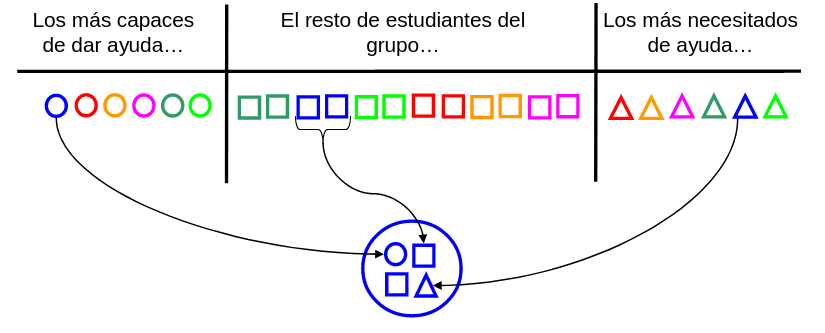
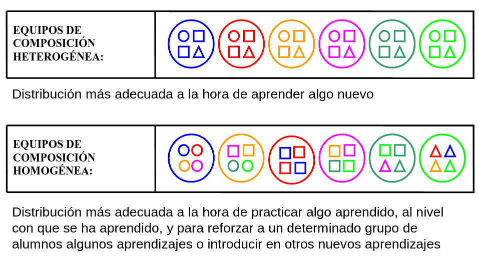

El programa GeCo facilita la formación de equipos de alumnos para el trabajo cooperativo, promoviendo la diversidad y mejorando la colaboración. La composición de los equipos puede ser heterogénea, homogénea o temporal según el objetivo del aprendizaje.
Para formar equipos, hay que distribuir a los estudiantes en tres subgrupos (tipologías A, B y C en este programa), según la propuesta de Pujolàs & Lago, 2011, cada grupo de 4 personas constará de los siguientes miembros:


El tamaño ideal de los equipos cooperativos es de 4 integrantes. Si no es posible hacer grupos de 4, entonces se pueden hacer de 3 o de 5, pero nunca de más.
Son grupos que durarán todo el curso o un trimestre. Favorecen el aprendizaje de nuevos conocimientos y se crean haciendo que en cada equipo estén representadas las tres tipologías (A, B y C).
Están formados por miembros con características similares y son adecuados para reforzar conocimientos ya adquiridos. Estos grupos se crean intentando que sean todos de la misma tipología (A, B o C). Como que normalmente los alumnos no cuadran exactamente en una tipología por grupo, podrán aparecer grupos con tipologías mezcladas.
Estos equipos se forman para tareas cortas o cuando no se conoce al alumnado y se utilizan especialmente al principio del curso o para actividades simples y rápidas. Estas agrupaciones son uniformes, ya que no hay distinción entre unos grupos y otros. Se forman mediante una selección aleatoria de alumnos. En este caso, el programa elimina las etiquetas de los alumnos, A, B y C, puesto que ya no tienen sentido.
GeCo crea equipos aleatorios basándose en las condiciones definidas por el usuario.
Típicamente, se harán de la siguiente manera:
Lógicamente, podemos hacer otras agrupaciones, por ejemplo, si queremos hacer grupos para jugar al ajedrez podríamos poner en A aquellos que saben jugar, en B los que solo saben mover las piezas y en C los que desconocen el juego.